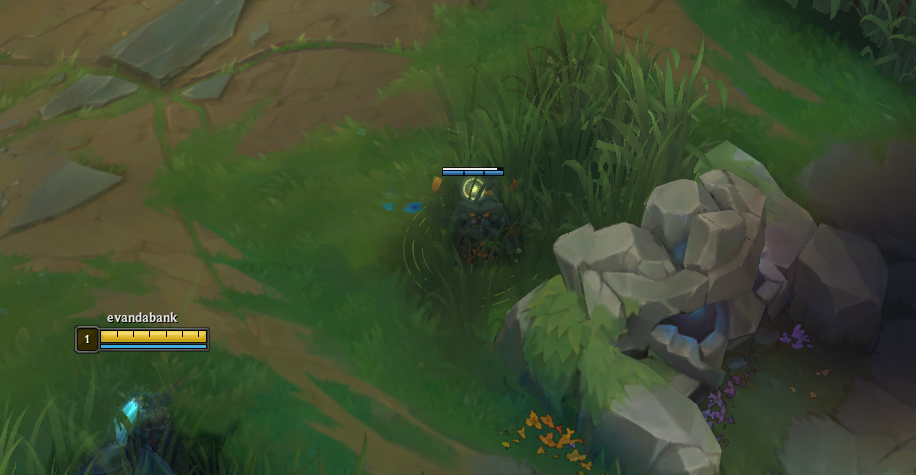
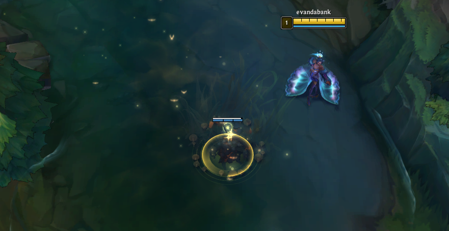
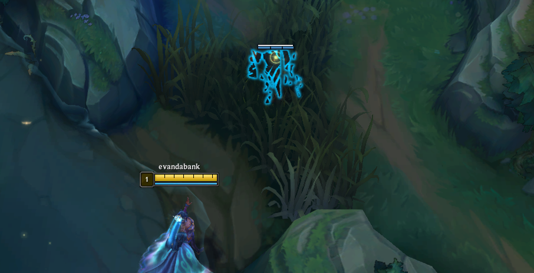
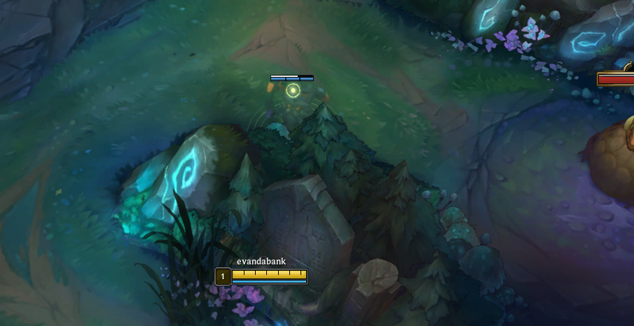

Laning & Early Game
Survive early 2v2 pressure, control waves with intention, and enter dragon fights with enough mana and health to paint the river.
Early Game
Level 1 plan: stay safe and avoid bad fights. ADCs are stronger during this point. Set up your level 3-5 trading by staying high HP.
- For level 1, we are almost always going to give priority. This means to stand back and let the enemy push the wave into us. Mel (and mages in general) are really really weak level 1. Especially against ADCs that take lethal tempo.
- Once we hit level 2-3 and are no longer at a level disadvantage, we can look to take harder trades.
- At the start of every lane, path IMMEDIATELY to the middle brush and drop a ward (video has more details). This will prevent the opponents from being able to bush cheese us level 1.
- After dropping the ward, backup and play for poke. Wait for the wave to crash and play safe. The goal is to enter level 2-3 with enough HP/mana that we can contest trades after.
- Make sure not to give CS and XP for no reason level 1. Sometimes though a champion like Nautilus might be able to zone you off the wave entirely.
Levels 2-5 plan: play by matchup, stay stable, and avoid falling behind before your level 6 spike.
- This part of the lane is going to depend HEAVILY on your lane matchup. Check out the matchup tab for more concrete information.
- Generally speaking, Hwei is strong when the fight starts at range and weak when the enemy support forces melee range. Hold E against lanes that can all-in.
- Key to this stage is knowing whether you can help your jungler at river. If your wave is bad, your support is late, or E is down, ping your jungler away instead of arriving late.
- By far the most importnat thing during this part of the lane is TO NOT DIE. Whatever you do, do not put yourslef behind.
- If you are not confident, keep the wave playable and trade with low-risk spells. Hwei does not need to win lane by force to be useful later.
Level 6-10 plan: this is where Hwei starts taking over space. You have ultimate, better waveclear, and enough spell access to punish enemies who walk through predictable paths.
- Starting around level 6-7, you have everything that you need to succeed. Points in all of your spells, several points in your Q, and a mana item such that you will NEVER be worried about going OOM if you aren't excessively spamming.
- Play from range and know which enemy cooldown can actually kill you. If that cooldown is down, step forward and pressure.
- Use QE to crash waves before dragon timers, then move first with your support and jungler or prepare EW in river entrances.
- Do not overstay for plates if the enemy jungler can punish you. Hwei is powerful around setup, not blind overextension.
Warding

Level 1 Ward
Use an early ward to cover the side you expect the jungler to path through, then lean toward that vision. Hwei is vulnerable when both river entrances are dark.

Boring ass river ward
A normal river ward is still useful, but only if you respect what it tells you. If you see the jungler, stop pushing and preserve E until the danger passes.

Side Entrance Ward
When you are pushing, ward the side entrance you plan to lean toward. Hwei can only play aggressively if one half of the map is known.

Stealth Champion Warding
For example, warding the river bushes against Shaco doesn't do anything. He is just going to use his Q over the wall. Instead, we want to ward his jungle camps (usually raptors). The same is true for champions like Evelynn and Twitch.